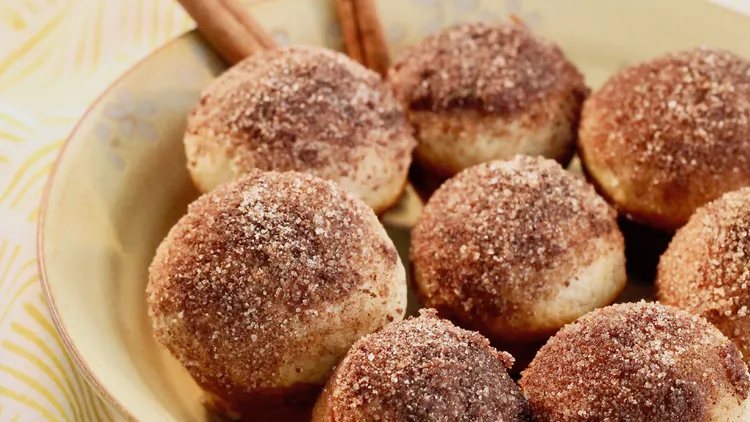

Easy Doughnut puffs

Easy Doughnut Puffs
A family favorite for years. Eyes light up when they discover I've made them.
Ingredients
- cooking spray
- 1 ¾ cups all-purpose flour
- ¾ cup white sugar
- ¾ cup milk
- ⅓ cup vegetable oil
- 1 egg
- 1 ½ teaspoons baking powder
- ½ teaspoon salt
- ½ teaspoon ground nutmeg
- ½ teaspoon ground cinnamon
Steps
- Preheat oven to 350 degrees F (175 degrees C). Spray a mini muffin tin with cooking spray or line with paper cups.
- Place flour, sugar, milk, vegetable oil, egg, baking powder, salt, 1/2 teaspoon nutmeg, and 1/2 teaspoon ground cinnamon in a bowl. Mix dough by hand until well combined but some lumps remain. Fill muffin tin with dough.
- Bake in the preheated oven until tops spring back when lightly pressed, but color is not yet golden brown, about 15 minutes.
- Pour melted butter into a bowl. Mix 1/3 cup sugar, 1 tablespoon cinnamon, and 1 teaspoon nutmeg together in a separate bowl. Dip muffins in the butter coating; immediately roll in the cinnamon dusting.